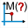
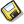
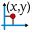

F1 |
Starts MathGraph32 Help in the current web browser, if available in the current langage. |
F2 |
Activation or deactivation of visual help while creating graphical objects. |
F3 |
Activation or deactivation of automatic naming of points. |
F4 |
Predefined construction implementation |
F5 |
Starts the figure protocol display via a floating dialog box. |
F6 |
Display all numerical objects in a dialog box and allows modification, deletion or reclassification. |
F7 |
Activates tool for modification of graphical objects. |
F8 |
Activates tool for execution of a macro (icon |
F9 |
Re-activates the last used tool if this tool was single-activated tool (measure tool for example). |
F10 |
When a construction is being implemented, displays information about it, else activates main menu. |
F11 |
Implementation of a construction included in the figure. |
F12 |
Activation of info tool : a click on a graphical object will display information about it and a number for javascript communication with the figure. |
Del |
Activates the tool for graphical object deletion. |
Ctrl + A |
Measure of complex affix in a frame (icon ). |
Ctrl + B |
Point creation in a frame through complex affix. |
Ctrl + C |
Copy the figure in the clipboard. |
Ctrl + D |
Creation of a frame through point and slope (icon ). |
Ctrl + E |
Creation of a real calculus. |
Ctrl + Shift + E |
Creation of a complex calculus |
Ctrl + F |
Creation of a real numerical function. |
Ctrl + G |
Creation of a complex numerical function. |
Ctrl + I |
Modification of a numerical object (icon |
Ctrl + J |
Creation of a free text display (icon |
Ctrl + L |
Creation of a value display linked to a point (icon ). |
Ctrl + K |
Creation of a text display linked to a point (icon |
Ctrl + M |
Non oriented angle mark creation (icon |
Ctrl + N |
Creation of a new empty figure with a length unity. |
Ctrl + O |
Opening a MathGraph32 file (icon ). |
Ctrl + P |
Prints the figure on the current printer (icon |
Ctrl + Q |
Creation of a line by an equation od the line in a frame |
Ctrl + S |
Saves the current figure (icon ). |
Ctrl + V |
Variable creation. |
Ctrl + Ins |
Creation of a point defined through coordinates in a frame (icon ). |
Ctrl + Z |
Cancels last action on figure |
Ctrl + Y |
Redo last action on figure |
Created with the Personal Edition of HelpNDoc: Create HTML Help, DOC, PDF and print manuals from 1 single source
 ).
). ).
). ).
). ).
). ).
). ).
). .
.